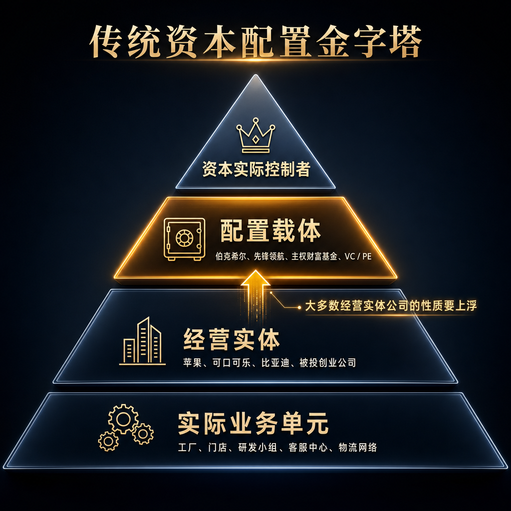
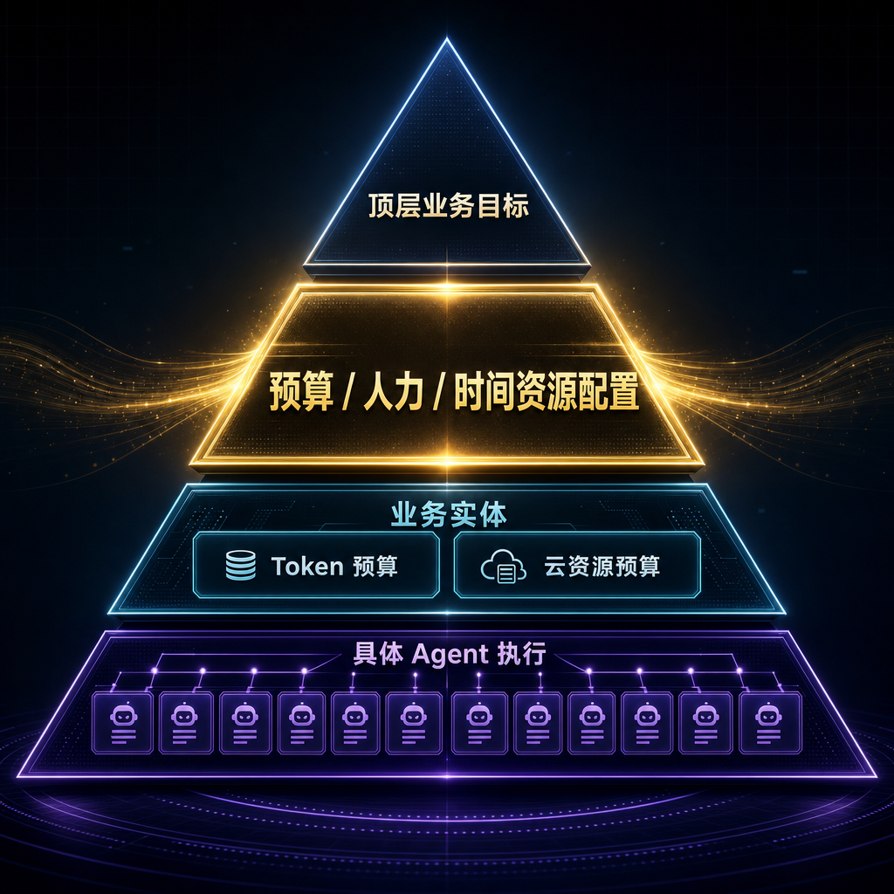
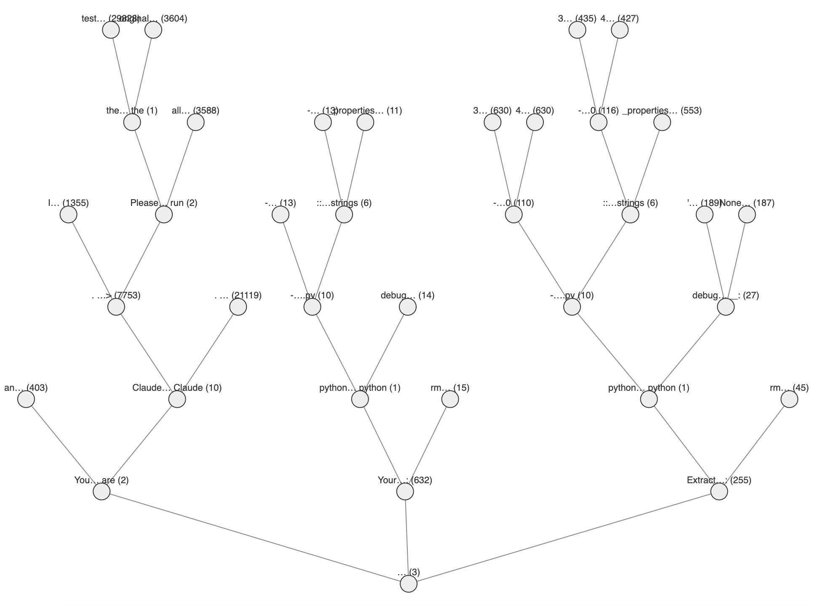

AI-native 公司：从经营执行平台到资源配置平台


AI-native 公司会从经营执行平台转向资源配置平台
1. 传统公司：执行与判断绑定在人身上
传统组织必须围绕人来设计岗位、流程和管理动作，因为具体执行与事务性判断长期绑定在同一个人身上。
2. AI-native：低层事务性判断开始托管
Agent 接走的不只是动作，还会逐步接走任务内部的低层判断，传统绑定关系因此被拆开。
3. 人的决策位置上移
当低层判断被托管，owner 不再主要回答“具体怎么做”，而是回答“资源应该投向哪里”。
4. 公司差别迁移为配置差别
新的组织优势不再主要来自执行体系，而来自更准确地配置资源、约束风险、判断加码和止损。
这本质上要求组织能持续做出有效判断和高效资源配置，日常不断积累优势，并拥有一套行之有效的组合优势机制。
预算机制是资源配置平台的第一块地基
1. 预算 = 四类资源组合包
一个事情要 kick off，owner 必须明确需要多少时间资源、执行力资源、注意力资源和 Infra 资源。
2. 预算显影 owner 的 AI 边界认知
owner 怎么提预算，反映他如何理解当前 AI 能做什么、不能做什么，以及哪里必须保留人工判断。
3. 预算让项目探索有边界
创业组织早期只有项目。预算让每次探索变成有投入额度、运行周期、复盘标准和止损条件的下注。
4. 预算最终长出 portfolio 机制
项目跑出长期价值后形成稳定结构；项目和结构变多后，预算自然上升为组合配置机制。
从 0 开始的 AI-native 团队怎么 run
1. 项目阶段：先配置资源与权限
团队一开始只有目标和项目。按“重要性 / 紧急性”区分事情，给不同项目配置不同资源、权限和运行边界。
2. 结构形成：把维护对象交给常驻 agent
项目跑一段时间后，会出现需要长期维护的对象。此时把项目资源转成常驻资源，但预算固定、权限收窄、目标清晰。
3. 稳定运行：维护与探索同时发生
稳定结构形成后，一边让常驻 agent 维护已有业务；一边划出资源做新项目、新算法、新组合，发现新的 alpha。
4. 市场反馈：驱动资源配置调整
历史能力和新机会必须被市场反馈验证。有效组合进入稳定结构，无效组合快速停止，资源配置随反馈动态调整。
Multi-agent system：先做自己的模型路由中转站
1. 一个 session 本质上就是一棵 agent 树
每个分叉都是一次 subagent 派生；分叉时机就是模型切换的操作空间：既可能在该节点省成本用差一点的模型，也可能为了关键节点的效果用更好的模型。

2. 分叉点就是模型路由点
树上的每个分叉，都可以选择强模型、弱模型或不同 agent 组合：要么省成本，要么在关键节点额外加大投入。
3. 路由 benchmark 能给出清晰反馈
Multi-agent 很难在真实业务里直接验证，但模型路由可以搭静态 benchmark：同样效果下，比较不同路由策略谁成本更低。
4. 中转站就是可迭代的研究平台
不同中转站就是不同路由策略。只要实现同样效果，谁花的钱少，谁的 multi-agent system 就更好。
TODO：下一步要立刻推进的三件事
1. 尽快实现预算驱动
每一个项目来到，必须明确 deadline（时间资源）、token 额度（智力资源）、人力（注意力资源）、云沙箱（执行力资源）。先从 LLM token 开始，把现在“每个人每天 50 刀额度”的机制，改成项目 owner 或团队 owner 按季度申请项目 token 额度或团队 token 额度。
2. 所有 LLM 调用必须被监控沉淀
目前 Claude Code plan、Cursor plan、Codex plan 等不走自己的 token 网关，调用和成本都无法统一沉淀；这些漏洞需要全部堵住。
3. 成立长期小分队做模型路由
专门成立长期小分队做模型路由：既能深入 multi-agent system，为公司节省的 token 成本又能直接让老板看到。